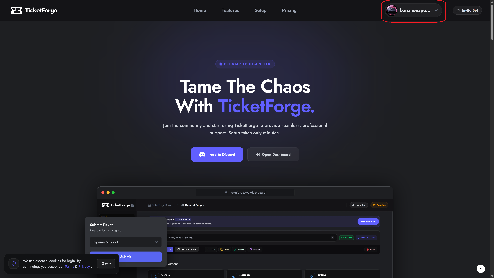
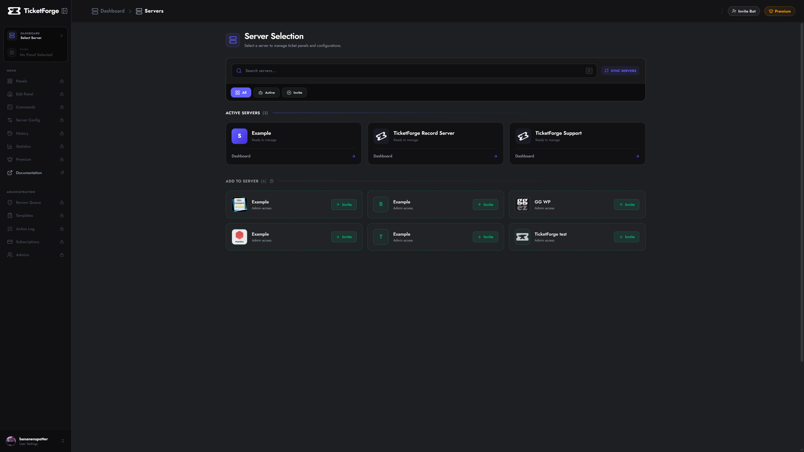
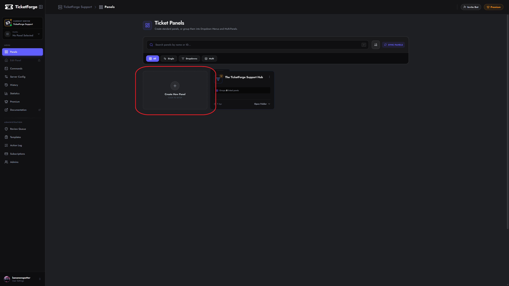
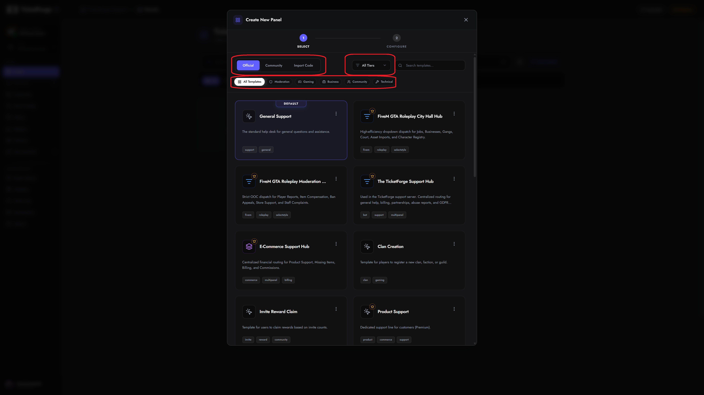
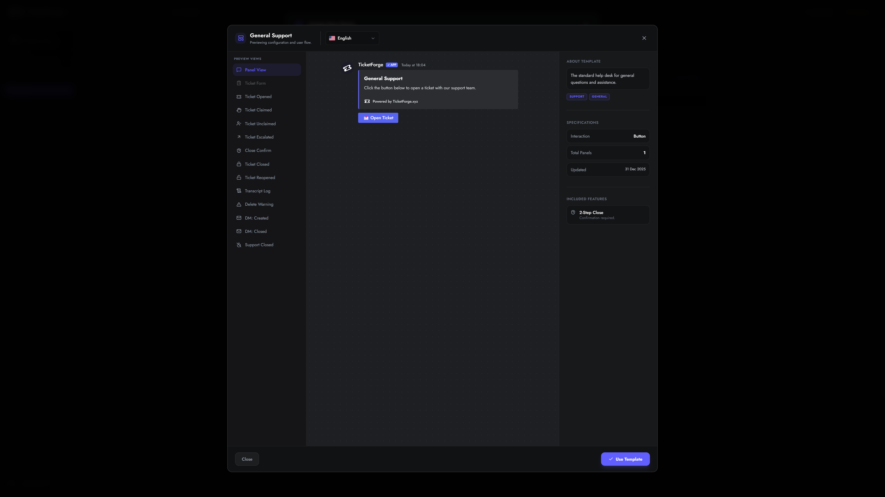
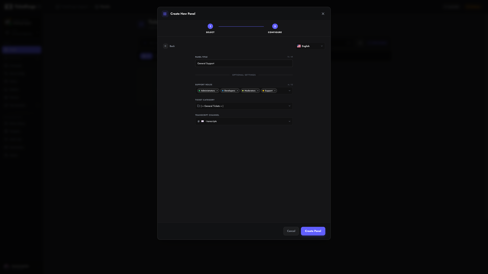
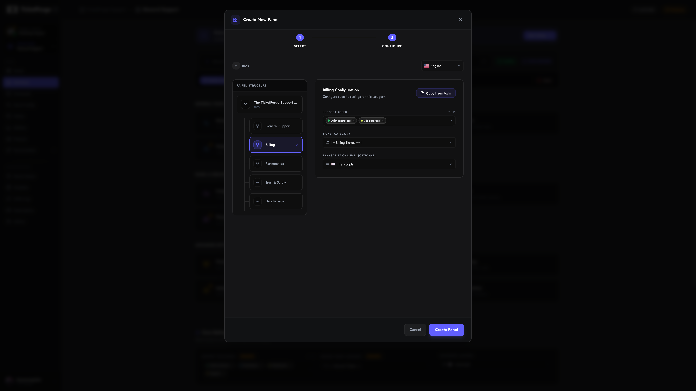
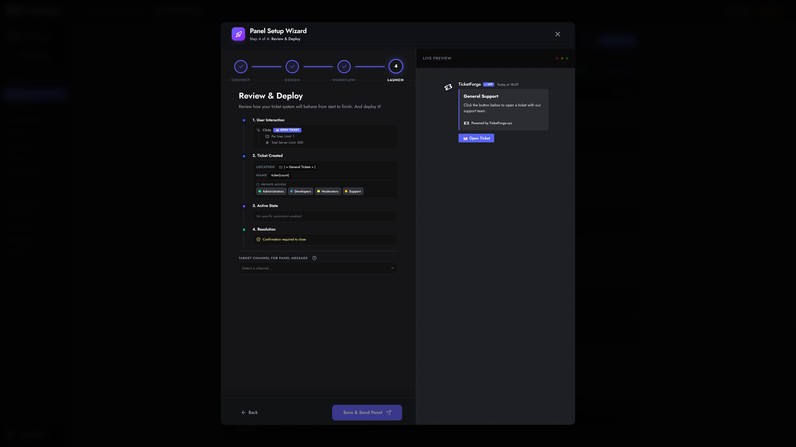

Creating a Panel
A Panel is the interface your users interact with on Discord to open tickets. TicketForge allows you to create multiple panels for different purposes (e.g., "General Support", "Billing", "Reports").
1. Login & Access
To begin, visit the TicketForge Website.
- Click the Login with Discord button in the top right corner.
- Authorize the TicketForge application to access your account information.

2. Server Selection
Once logged in, you will automatically navigate to the server selection page, here select the server where you want to create the panel.
You can also navigate to this page by clicking on your profile and then "Servers".
- Click on your Profile Picture in the top right corner to open the menu.
- Select Dashboard from the dropdown menu.

- You will see a list of your Discord servers:
- Manage: The bot is already in this server. Click to enter the dashboard.
- Invite: The bot is not in this server. Click to invite it, then refresh the page.
Can't see your server?
If a server is missing from this list, ensure you have the Manage Server permission on that Discord server. If you just got permissions, try logging out and logging back in to refresh your token.
3. Creating the Panel
After selecting a server, navigate to the Panels tab in the sidebar and click the Create New Panel card.

Step A: Selection Strategy
You will be presented with three ways to start your configuration:
- Official Templates (): Pre-configured templates designed by our team for common use cases like "General Support" or "Report Systems".
- Community Templates (): User-generated templates. Always review roles/permissions before using these.
- Import from Code (): If you have a share code (format:
XXXX-XXXX-XXXX), paste it here to clone an exact configuration.

Previewing Templates
Before making a choice, you can hover over any template card and click the Preview () button. This opens a detailed interactive preview showing exactly how the panel, forms, and messages will look in Discord.

Step B: Configuration
Once a template is selected, you can configure the core identity (optional at this step) of the panel.
Single Panel Configuration
For standard templates, you only need to define:
* Panel Title: Internal name (e.g., "Support-Main").
* Support Roles: The Discord roles (e.g., @Moderator) that can view tickets.
* Ticket Category: The Discord Category where new tickets will be created.

Multi-Panel Configuration
For complex templates (like a "Hub" system with multiple departments): 1. Select the Main (Root) panel in the sidebar to configure the entry point. 2. Select Sub-Panels to configure specific categories (e.g., "Billing"). 3. Tip: Use Copy from Main to quickly apply settings across all sub-panels.

Step C: Creation / Launching
Click Create Panel. You will be redirected to the Setup Wizard to finalize your settings (Forms, Branding, Automation) and send the panel to Discord.
